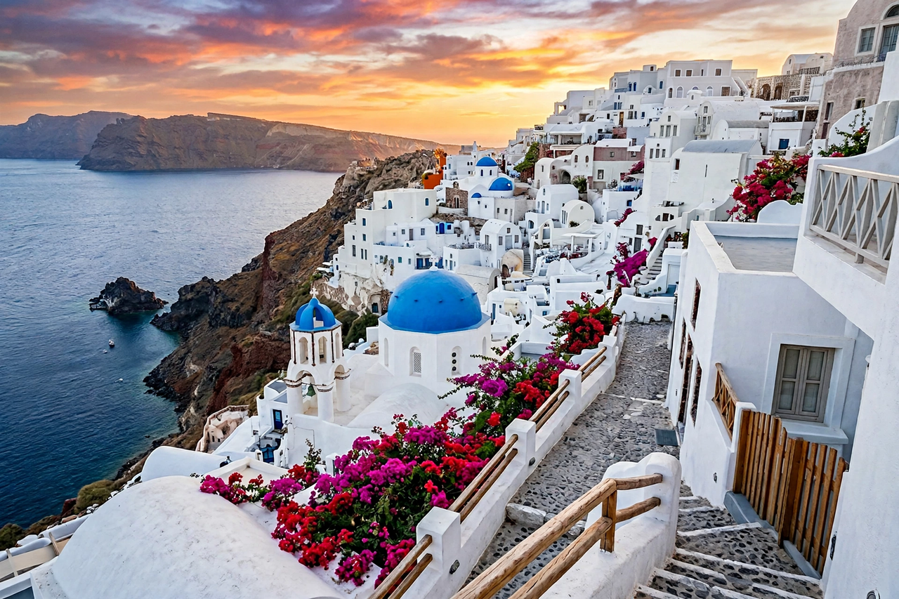

Santorini
From Wikipedia, the free encyclopedia

Santorini (officially Thira) is a Greek island in the southern Aegean Sea, the largest of a small circular archipelago that is the remnant of a drowned volcanic caldera. Its crescent of multicoloured cliffs — whitewashed villages (Fira, Oia) perched 300 metres above the lagoon — makes it one of the world's most famous landscapes and Greece's most visited island, and its Bronze Age eruption (c. 1600 BC) buried the Minoan town of Akrotiri in ash — a candidate inspiration for Plato's Atlantis.
The eruption
The Minoan eruption of Thera was among the largest in recorded history (VEI 6–7), ejecting tens of cubic kilometres of material, sending tsunamis across the Aegean (devastating Minoan Crete's coasts, though the civilisation's fall followed later), and preserving Akrotiri's frescoed houses under ash — Greece's Pompeii. Ice-core and tree-ring dating places it around 1613 BC or in the 1560s–40s, a still-fought scholarly war; Egyptian and Chinese records may register its climatic aftershocks.
Modern island
Santorini's economy is tourism at saturation scale (some 3 million visitors a year to 15,000 residents, cruise-ship caps debated), plus Assyrtiko wine grown in basket-trained vines against the wind, grown in volcanic ash soils. The caldera remains an active volcanic centre (last eruption 1950; Nea Kameni grows in the lagoon) monitored as both hazard and attraction.